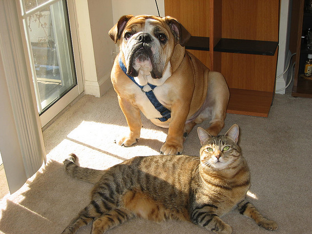

// part 1 of 8
Part 1
Numbers, vectors and learning from zero
Everything later in this course is arithmetic on lists of numbers. This part builds that arithmetic from nothing: what a picture is to a computer, how two lists of numbers are compared, what one layer of a network computes, how a network learns by walking downhill on a score of its own mistakes, how a list of scores becomes a list of shares, and why a network can learn from photographs that nobody has labelled. Sections 1.1 to 1.5 each come with a worked example you can redo with a pencil and a lab you can play with; 1.6 and 1.7 are told with a figure and a table. Toy
Read a section, check its worked example by hand, then open its lab and change one thing at a time. Each worked example says how it rounds its numbers, and any step redone from the printed numbers gives the printed result. Each section says at the top what it assumes and what it gives, so you can skip what you know. The marks say where each statement comes from (start page, 0.2): here most are Toy, the page's own examples and reasoning, and the Fact, Real and Reading marks tie each idea to DINO, SelfPatch and our own runs. Toy
1.1 An image is numbers
A computer stores a picture as a grid of tiny coloured squares called pixels. Each pixel holds 3 numbers: how much red, how much green and how much blue it shows. These three are the picture's colour channels. In a stored photograph each of them is a whole number from 0 to 255, where 0 means none of that colour and 255 the most that the file can hold. Fact

So a picture is a block of numbers. The network, the program that learns from these numbers (1.3 builds one), keeps such a block as a tensor, and the tensor's shape lists how long each of its sides is. In training, the long run of small corrections by which a network learns (1.4), it is shown pieces cut out of each photograph, called crops, each resized to a square of a fixed size: usually a part of the photograph, at most all of it. A crop 224 pixels on a side has the shape 3 × 224 × 224, which makes 150,528 numbers. Fact
Before those numbers enter the network they are normalised in two moves. First every value is divided by 255, so that it lies between 0.0 and 1.0. Then, channel by channel, the mean of that colour over ImageNet, a large public collection of photographs, is subtracted, and the result is divided by that colour's standard deviation, a measure of how widely the values spread around their mean. The means are 0.485 for red, 0.456 for green and 0.406 for blue; the standard deviations are 0.229, 0.224 and 0.225. Fact
Our runs use exactly these six numbers: they build their crops with SelfPatch's own augmentation code, which cuts the crops, changes them at random (Part 3) and, as its last step, applies this normalisation. Fact
After normalisation, 0 means "as strong as an average ImageNet photograph in this colour", a positive number means stronger, a negative number weaker, and a step of 1 is one standard deviation. Every value ends up between about −2.118 (no red at all) and 2.640 (full blue): small numbers on one scale, centred near zero. Toy
Normalising one pixel
- c
- the channel: red, green or blue (a name, used to pick the right constants)
- xc
- the stored number of channel c: one scalar, a whole number from 0 to 255
- μc
- the ImageNet mean of channel c: a fixed scalar, 0.485, 0.456 or 0.406
- σc
- the ImageNet standard deviation of channel c: a fixed scalar, 0.229, 0.224 or 0.225
- x̂c
- what the network receives for channel c: one scalar; a 224 pixel crop gives 3 × 224 × 224 of them
Rounding: every number below is printed to three decimals, or to four where the next step needs them; redo any step from the printed numbers and you get its printed result. Toy
The red ball of the drawn sample scene is painted (217, 58, 51). Red: 217 / 255 = 0.851; 0.851 − 0.485 = 0.366; 0.366 / 0.229 = 1.598. Green: 58 / 255 = 0.2275; 0.2275 − 0.456 = −0.2285; −0.2285 / 0.224 = −1.020. Blue: 51 / 255 = 0.200; 0.200 − 0.406 = −0.206; −0.206 / 0.225 = −0.916. The network receives (1.598, −1.020, −0.916): far more red than an average photograph, and less green and less blue. Green needs its fourth decimal: from 0.227 and −0.229 the last step would give −1.022, a slip in the third decimal that rounding alone causes. Toy
The extremes, for a feel of the scale: a red value of 0 becomes (0 − 0.485) / 0.229 = −2.118, and a blue value of 255 becomes (1 − 0.406) / 0.225 = 2.640. Toy
Nothing here learns: the six constants never change. The gradient (section 1.4), which tells every learned number how to move, flows back through this step multiplied by 1 / (255 σc), about 0.0171 for red, and stops at the stored pixel: training changes the network's weights (1.3), never the picture. Toy
The normalisation is the same for every crop of every training run: SelfPatch's augmentation code ends every crop with it, and our runs call that code. Fact
Lab 1A shows these numbers for any pixel you point at: on the drawn sample scene, on the course's photograph, or on a picture of your own, which never leaves your browser. Its mixer makes a pixel from three numbers you choose. Toy
Pixels are numbers
What does the computer receive when it looks at a picture?
Toy FactWhat you are looking at: a square picture of 224 by 224 pixels. Point at a pixel, or tap it, to read its red, green and blue numbers in the magnifier and to follow them through the normalisation in the table. The buttons switch between the drawn sample scene, the course's photograph and a picture of your own; the mixer turns three numbers you choose into a colour and into what the network would receive.
Real model versus this toy: the formula and its six constants are the ones the training code uses. The real loader first cuts a crop out of the photograph and resizes it (Part 3), while this lab normalises the whole square picture as it is. The course's photograph is decoded and resized by your browser, so a pixel can differ by a few levels from the one that the course's own script read when it computed the real numbers; while the photograph is shown, the lab says exactly how. Fact
1.2 Vectors, dot products and cosine similarity
A vector is an ordered list of numbers, and how many numbers it holds is its dimension. A pixel is a vector of dimension 3. The network cuts each crop into squares of 16 by 16 pixels, called patches, and turns every patch into a vector of 384 numbers, called a token (Part 2). Fact
You can draw a vector of 2 numbers as an arrow from the origin: (2, 1) means 2 steps to the right and 1 step up. A vector of 3 numbers is an arrow in space. A vector of 384 numbers cannot be drawn, yet every rule below works for it in exactly the same way: the sums just run over 384 terms instead of 2 or 3. Toy
The dot product of two vectors multiplies their matching numbers and adds the products: a · b = a1b1 + a2b2 + … It is large and positive when the two arrows point the same way, near zero when they stand at right angles, and negative when they point apart. Toy
The length of a vector, written ‖a‖, is the square root of its dot product with itself, as Pythagoras says: ‖(2, 1)‖ = √(2² + 1²) = √5, about 2.236. Toy
The dot product also grows when either arrow gets longer. To compare directions only, divide it by both lengths. The result is the cosine similarity, cos(a, b) = a · b / (‖a‖ ‖b‖): the cosine of the angle between the two arrows. It always lies between −1 (opposite directions) and 1 (the same direction), with 0 for a right angle, and making an arrow longer or shorter never changes it. That is why "similar" can be one number between −1 and 1. Toy
Dividing a vector by its own length gives a vector of length 1 that points the same way, a unit vector. In two dimensions every unit vector ends on the circle of radius 1; in three dimensions, on a sphere; in 384 dimensions, on what is still called the unit sphere. For two unit vectors the cosine is simply their dot product. Toy
Every method in this course compares vectors this way. DINO's head, a small network that DINO puts after the one that makes the tokens (Part 3), scales a vector of 256 numbers to length 1, so those vectors lie on a sphere. SelfPatch ranks a patch's neighbours by the cosine similarity of their tokens. Our rule ranks every pair of patches in a crop by the cosine of their tokens in the teacher, the second of the two networks that DINO-style training keeps (Part 3). And the decoder of Part 6, which reads object outlines out of the network, links two patches when the cosine of their keys, vectors that the network's attention computes for every patch (Part 2), is above 0.2. Fact
Cosine similarity
- a, b
- two vectors of the same dimension d: 3 numbers each here, 384 for two tokens
- ai
- the i-th number of a, a scalar
- a · b
- the dot product, one scalar of any sign
- ‖a‖
- the length of a, one scalar of zero or more
- cos(a, b)
- one scalar from −1 to 1; it is not defined when a vector has length 0
Rounding: fractions are exact, and every decimal is printed to three places; redo any step from the printed numbers and you get its printed result. Toy
Take a = (1, 2, 2) and b = (2, 1, 2). The products are 1 × 2 = 2, 2 × 1 = 2 and 2 × 2 = 4, so a · b = 8. The squares of a are 1, 4 and 4, so ‖a‖ = √9 = 3, and ‖b‖ = 3 the same way. So cos(a, b) = 8 / (3 × 3) = 8/9 ≈ 0.889, an angle of about 27.3°. As unit vectors, a/3 = (1/3, 2/3, 2/3) and b/3 = (2/3, 1/3, 2/3), about (0.333, 0.667, 0.667) and (0.667, 0.333, 0.667), and their dot product 2/9 + 2/9 + 4/9 = 8/9 gives 0.889 again. Toy
Three more. With c = (2, −2, 1): a · c = 2 − 4 + 2 = 0, so the cosine is 0, a right angle. With −a = (−1, −2, −2) the cosine is −1. With 2a = (2, 4, 4): a · 2a = 18, twice a · a = 9, yet cos(a, 2a) = 18 / (3 × 6) = 1: length never changes the cosine. Toy
How does the cosine change when a moves? Its gradient is ∂cos/∂a = b / (‖a‖ ‖b‖) − cos(a, b) · a / ‖a‖². In the example that is (2, 1, 2)/9 − (8/9) · (1, 2, 2)/9 = (18, 9, 18)/81 − (8, 16, 16)/81 = (10, −7, 2)/81 ≈ (0.123, −0.086, 0.025): raise the first number, lower the second, nudge the third. It stands at right angles to a itself (1 × 10 + 2 × (−7) + 2 × 2 = 0), so a small move along it turns a towards b and barely changes its length. Moving a by 2 times this gradient, that is by (20, −14, 4)/81 ≈ (0.247, −0.173, 0.049), gives (1.247, 1.827, 2.049), and the cosine rises from 0.889 to 0.931. Toy
Part 5's rule takes each patch of a crop in turn as an anchor. Among the other patches of the crop it picks the anchor's positives, whose tokens should agree with the anchor's, and its negatives, whose tokens should not. The trainer, the program that trains the network, logs con_margin_mean at every step (one update of the network, 1.4). It is a positive's cosine minus the cosine of the anchor's most similar negative, averaged over every pair of an anchor and a positive whose anchor has a negative. Fact
In run 2, one of the thesis's training runs with our rule (Part 5), that gap was 0.5235 at step 1 and 1.2792 at step 9,240: over training, the positives' cosines pulled away from those of the most similar negatives. Lab 5E draws the whole run as a curve. Real
Lab 1B lets you drag two arrows and watch the dot product, the lengths, the cosine and the angle, then type two vectors of three numbers and see every product and square written out. Toy
Two vectors, one number
How does one number say whether two arrows point the same way?
ToyWhat you are looking at: two arrows a and b on a grid with the dashed circle of radius 1. Drag either tip, or use the presets, and read the dot product, the two lengths, the cosine and the angle; the grey bar along a is b's shadow, whose length times ‖a‖ is the dot product. Below, the same arithmetic for two vectors of three numbers that you type.
Real model versus this toy: real tokens have 384 numbers each and cannot be drawn. Our code computes their cosines with this same formula, for every pair of patches of a crop at once. Fact
1.3 A layer: weights, a bias and a bend
A neural network is a chain of layers, and one layer takes a vector in and gives a vector out. Each output number is the dot product of the input with one row of weights, plus one more number, the bias: z = W x + b. PyTorch, which our code is written in, calls this a linear layer. Fact
With 3 inputs and 2 outputs, W has 2 rows of 3 weights and b has 2 numbers. The weights and the biases are the network's parameters: the numbers that training adjusts. Toy
The first layer of the real model turns each patch's 768 numbers into a token of 384: that takes 384 × 768 weights plus 384 biases, 295,296 parameters. The whole backbone, the main body of the network, has 21,664,128. Fact
After the weighted sums, the layer bends every output with a fixed function, its activation. The simplest is ReLU: it keeps a positive number and turns a negative one into 0, ReLU(z) = max(0, z). Fact
The real model uses a smoother bend, GELU: GELU(z) = z · Φ(z), where Φ(z) is the chance that a number drawn from the standard bell curve is below z. The transformer, the network of Part 2 that makes the tokens, is a stack of blocks, and inside every block a small two-layer network, the MLP, widens each token from 384 numbers to 1,536, applies PyTorch's exact GELU and narrows it back to 384. Fact
GELU lets large positive numbers through almost unchanged, turns large negative ones into almost 0, and bends gently in between: GELU(1) = 0.841, GELU(−0.5) = −0.154, and its lowest value, about −0.170, comes at z ≈ −0.752. Toy
Why bend at all? Without a bend, two layers in a row are one layer in disguise: a weighted sum of weighted sums is again a weighted sum. The figure shows it with numbers. Toy
A linear layer and GELU
- x
- the input vector: 3 numbers here, 384 in the first layer of the transformer's MLP
- W
- the weights: a matrix of 2 rows by 3 columns here, 1,536 by 384 in the MLP's first layer
- b
- the biases: one scalar per output
- z
- the weighted sums before the bend: one scalar per output
- Φ(z)
- the chance that a standard bell-curve number is below z: a scalar from 0 to 1
- y
- the outputs after the bend: one scalar per output
Rounding: numbers are printed to three decimals, or to four or five where a later step needs them, and the exact products 0.5 × 0.35207 and 0.1325 × (2, −1, 1) are printed in full; redo any step from the printed numbers and you get its printed result. Toy
Take x = (2, −1, 1), the rows of W (1, 2, −1) and (0.5, −1, 2), and b = (0.5, −1). Then z1 = 1 × 2 + 2 × (−1) + (−1) × 1 + 0.5 = 2 − 2 − 1 + 0.5 = −0.5 and z2 = 0.5 × 2 + (−1) × (−1) + 2 × 1 − 1 = 1 + 1 + 2 − 1 = 3. ReLU turns them into (0, 3). For GELU, Φ(−0.5) = 0.3085, so y1 = −0.5 × 0.3085 = −0.154, and Φ(3) = 0.9987, so y2 = 3 × 0.9987 = 2.996. Toy
A weight moves according to what it multiplied. Its gradient (1.4) says how much the loss, the score of wrongness that training lowers, changes when the weight moves; here ∂zj/∂Wji = xi and ∂zj/∂bj = 1, so the gradient on a weight is the gradient that reaches its output times its input. On its way back through the bend the gradient is multiplied by the bend's slope: ReLU's slope is 1 above 0 and 0 below, and GELU's is Φ(z) + z φ(z), where φ is the bell curve itself. Toy
To five decimals, Φ(−0.5) = 0.30854 and the bell curve's height at z1 = −0.5 is φ(−0.5) = 0.35207, so GELU's slope there is 0.30854 − 0.5 × 0.35207 = 0.30854 − 0.176035 = 0.1325. If the loss sends a gradient of 1 to y1, the first row of weights receives 0.1325 × (2, −1, 1) = (0.265, −0.1325, 0.1325) and b1 receives 0.1325. Under ReLU they would receive nothing at all, because ReLU's slope is 0 for a negative sum. Toy
The bend never changes; the weights and the biases change at every step of training, each by its learning rate times its gradient (1.4 takes such steps by hand). Toy
In our runs the backbone holds still at first. Steps 1 to 462 make up the first epoch, one pass over all the training images (1.7), and in it the backbone's gradients are discarded while the heads, small networks that sit on top of the backbone (Parts 3 and 5), already learn. Step 463 is the first that can move the backbone. Fact
The logged learning rates agree: in run 2 (Part 5) the backbone's was 0 at step 1 and 1e-6 at step 463, where 1e-6 is 0.000001, 1 divided by 10 six times. Real
Lab 1E is the first layer of the figure, live: type any input, weight or bias, choose the bend, and add the second layer. Toy
One layer, by hand
What does a layer with three inputs and two outputs compute?
ToyWhat you are looking at: three inputs on the left and two outputs on the right. Each arrow carries its weight near the input and the product it adds near the output, thicker for a larger product and dashed for a negative one. Below the drawing every sum is written out, and the curve shows where the bend puts each output. With the second layer on and the bend set to none, the lab names the single layer that would do the same job.
Real model versus this toy: the transformer's MLP has the same shape at a larger size, 384 inputs, 1,536 outputs bent by GELU, and 384 again. Fact
1.4 A loss, a gradient and a step downhill
How does a network find good weights? It needs a score of how wrong it is: one number, the loss, that is small when the outputs are good and large when they are bad. Training is the search for parameters that make the loss small. Toy
Take the smallest network there is, a line ŷ = w x + b with two parameters, and three points to fit: (1, 1), (2, 3) and (3, 2). For each point the error is the prediction minus the target, e = ŷ − y. The loss is the mean squared error, L = (e1² + e2² + e3²) / 3: squaring makes every miss count as positive, and big misses count far more than small ones. Toy
The gradient says, for each parameter, how fast the loss changes when that parameter moves a little: ∂L/∂w and ∂L/∂b. Its sign points the way the loss rises, so the opposite way lowers it. Toy
Gradient descent repeats one move: compute the gradient, then step every parameter a little against it, w ← w − η ∂L/∂w. The learning rate η sets the size of the step: too small and training crawls, too large and each step overshoots the bottom and the loss grows. Toy
A real network does exactly this with every parameter at once. Its gradient comes from backpropagation: the loss's sensitivity is passed backwards through the layers, one layer at a time, each layer multiplying it by its own slope, as the walk of 1.3 did for one layer. Toy
Our runs do not step with plain gradient descent: they use AdamW, an optimiser that keeps running averages of each parameter's gradient and of its square and divides the one by the square root of the other (Part 5 walks through it). Their learning rate peaks at 1e-5 (0.00001) for the backbone and at 1e-4 (0.0001) for the heads, the small networks on top of the backbone. Fact
The gradient-descent update
- θ
- any one parameter, a scalar: w or b here, each of the 21,664,128 in the backbone
- L
- the loss: one scalar for the whole batch of examples
- ∂L/∂θ
- the gradient of the loss with respect to θ: one scalar per parameter
- η
- the learning rate, a small positive scalar: 0.1 here, 1e-5 at the backbone's peak in our runs
- ei
- the error on point i, w xi + b − yi: one scalar per point
Rounding: fractions are exact, and decimals are printed to three places, or to five where a later step needs them; redo any step from the printed numbers and you get its printed result. Toy
Step 1 starts at w = 0, b = 0. The predictions are (0, 0, 0), the errors (−1, −3, −2), so L = (1 + 9 + 4) / 3 = 14/3 = 4.667. Σ eixi = (−1) × 1 + (−3) × 2 + (−2) × 3 = −1 − 6 − 6 = −13, so ∂L/∂w = (2/3) × (−13) = −26/3 = −8.667; Σ ei = −1 − 3 − 2 = −6, so ∂L/∂b = (2/3) × (−6) = −4. With η = 0.1: w = 0 − 0.1 × (−26/3) = 26/30 = 13/15 = 0.867 and b = 0 − 0.1 × (−4) = 0.4. Toy
Step 2 keeps w as the fraction 13/15, because 0.867 is rounded, and writes b = 0.4 as 6/15. The predictions are 13/15 + 6/15 = 19/15, 26/15 + 6/15 = 32/15 and 39/15 + 6/15 = 45/15 = 3, about (1.267, 2.133, 3); the errors are 4/15, −13/15 and 1, about (0.267, −0.867, 1); and L = (16/225 + 169/225 + 225/225) / 3 = 410/675 = 0.607. One step took the loss from 4.667 to 0.607. Toy
Now Σ eixi = 4/15 × 1 + (−13/15) × 2 + 1 × 3 = 4/15 − 26/15 + 45/15 = 23/15 and Σ ei = 4/15 − 13/15 + 15/15 = 6/15 = 0.4, so ∂L/∂w = (2/3) × 23/15 = 46/45 = 1.022 and ∂L/∂b = (2/3) × 0.4 = 4/15 = 0.267. The step gives w = 13/15 − 0.1 × 46/45 = 0.86667 − 0.10222 = 0.764 and b = 0.4 − 0.1 × 4/15 = 0.4 − 0.02667 = 0.373, where L = 0.556. Toy
The best any line can do on these three points is w = 0.5, b = 1: its predictions are 1.5, 2 and 2.5, its errors 0.5, −1 and 0.5, and L = (0.25 + 1 + 0.25) / 3 = 0.5. Toy
The gradient points uphill; the minus sign sends each parameter downhill, scaled by η. Near the bottom the gradient shrinks, so the steps shrink by themselves. On these points the valley curves about 46 times more sharply across than along its floor: the first step drops almost to the floor, the later ones creep along it, and any η above about 0.18 overshoots across the valley a little more at every step, so the loss grows. Toy
In run 2 the total loss (Part 5 explains its two terms) was 11.2743 at step 1, 11.5987 at step 463, 7.3713 at step 4,620 and 6.5921 at step 9,240: it fell, though not at every step. The backbone's learning rate was 0 at step 1, 1e-6 at step 463, 1e-5 at step 4,620 and 1e-7 at step 9,240: in a real run even η follows a schedule, rising over a first stretch of training called the warm-up and then decaying. Lab 5E draws both as curves over the whole run. Real
Lab 1C runs the worked example, and as many steps after it as you like. It draws the loss for every choice of w and b as a landscape, so you can watch each step go downhill, change the learning rate until the steps overshoot, and play the next steps as a film. Toy
Walking downhill
How does gradient descent fit a line to three points?
ToyWhat you are looking at: on the left the three points, the current line and its errors; on the right the loss for every choice of w (across) and b (up) as a shaded landscape, the closer to the text colour the lower the loss, with the lowest point crossed, the path of the steps so far and the next step as a dashed arrow. Step once or ten times, change the learning rate, or click the landscape to start elsewhere. Below: the loss after every step, the arithmetic of the next step, and the next steps as a film.
Real model versus this toy: the real backbone has 21,664,128 parameters, so its landscape cannot be drawn, and our runs step with AdamW on a scheduled learning rate. The gradient and the step against it are the same idea. Fact
1.5 Softmax and temperature
A network often ends with a list of scores, one per option, and needs shares: positive numbers that add up to 1, like the slices of a pie, also called a probability distribution. Softmax makes them: raise e, a constant close to 2.718, to the power of each score, then divide each result by the sum of all of them. A larger score always gets a larger share. Fact
Before the softmax, the scores can be divided by a temperature τ. A small τ stretches the gaps between the scores, so the largest takes almost everything and the shares get sharper; a large τ shrinks the gaps and the shares get flatter. Fact
DINO uses two networks: a student, which learns from the loss, and a teacher, whose shares the student learns to match (Part 3). This course meets three real temperatures: 0.1 for the student; 0.04 for the teacher in SelfPatch's code and in our runs (DINO's own recipe raises the teacher's from 0.04 to 0.07 over its first 30 epochs); and 0.2 in our rule's loss. Fact
Entropy measures how spread the shares are: H = −Σ p ln p, where ln is the natural logarithm. It is 0 when one option takes everything and largest when all the shares are equal, ln 3 ≈ 1.099 for three options. Computers also subtract the largest score from every score before raising e to it: the shares stay the same and the powers never grow too large to store. Toy
Softmax with temperature
- z
- the scores, one scalar per option: 3 here, 65,536 in DINO's head, one for each prototype, a learned vector that the head compares its output with (Part 3)
- τ
- the temperature, a positive scalar
- e
- the constant 2.718…, the base of the natural logarithm
- p
- the shares: one scalar per option, each above 0, adding up to 1
- H
- the entropy, one scalar: from 0 to ln 3 ≈ 1.099 for three options
Rounding: numbers are printed to three decimals, or to four where a later step needs them; redo any step from the printed numbers and you get its printed result. Toy
Take three cosine-like scores z = (0.8, 0.5, 0.2). At τ = 1: e0.8 = 2.226, e0.5 = 1.649, e0.2 = 1.221, their sum is 5.096, and the shares are 2.226 / 5.096 = 0.437, 1.649 / 5.096 = 0.324 and 1.221 / 5.096 = 0.240. Toy
The entropy of these shares, term by term: ln 0.437 = −0.828, ln 0.324 = −1.127 and ln 0.240 = −1.427, so H = 0.437 × 0.828 + 0.324 × 1.127 + 0.240 × 1.427 = 0.362 + 0.365 + 0.342 = 1.069. Toy
At τ = 0.2, our rule's temperature: z/τ = (4, 2.5, 1); e4 = 54.5982, e2.5 = 12.1825, e1 = 2.7183; the sum is 69.499, and the shares are 0.7856, 0.1753 and 0.0391; from them, with the logarithms kept unrounded, H = 0.622. Subtracting the largest scaled score first gives (0, −1.5, −3), powers (1, 0.2231, 0.0498), the sum 1.2729 and the same shares. Toy
At τ = 0.1, the student's temperature: z/τ = (8, 5, 2); e8 = 2,980.958, e5 = 148.413, e2 = 7.389; the sum is 3,136.760, and the shares are 0.9503, 0.0473 and 0.0024; from them, the same way, H = 0.207. The scores never changed; only the temperature did. Toy
Suppose option 1 is the right one and the loss is −ln p1. Its gradient on the scores is (p − t) / τ, with t = (1, 0, 0). At τ = 1 that is (0.437 − 1, 0.324, 0.240) / 1 = (−0.563, 0.324, 0.240), which Lab 1D shows when you pick option 1 as the target. Going downhill means going against it: z1 is pulled up by (1 − p1) / τ, and each other score is pushed down by its own share divided by τ. The pull is (1 − 0.437) / 1 = 0.563 at τ = 1, (1 − 0.7856) / 0.2 = 1.072 at 0.2, and only (1 − 0.9503) / 0.1 = 0.497 at 0.1, because by then option 1 already holds 0.9503 of the share. Toy
Part 5's loss has exactly this shape. For an anchor and one of its positives (1.2), the loss is −ln of the positive's share in a softmax over the positive and the anchor's negatives; its gradient pulls the anchor's token in the student towards the positive with the weight 1 − wp and pushes it away from each negative with the weight wn, all divided by τ, where the w are those softmax shares. Fact
In our rule every pair of an anchor and one of its positives is such a softmax at τ = 0.2, over the positive and the anchor's negatives, and the trainer logs the negatives' share of it, averaged over all those pairs, a pair whose anchor has no negative counting 0: con_neg_share_mean. Fact
In run 2 that share was 0.4976 at step 1 and 0.0326 at step 9,240: training moved the cosines until the positive took almost all of the share. Lab 5E draws the whole run as a curve. Real
Lab 1D has the three scores, the temperature, the bars, the entropy and every step of the arithmetic, the shares across all temperatures at once, and, when you pick a target, the pull and the pushes of its gradient. Toy
Turning scores into shares
What does the temperature do to three scores?
ToyWhat you are looking at: three scores and their shares after a softmax at the temperature you choose, the entropy, every step of the arithmetic, and how the three shares change as the temperature runs from 0.04 to 5. The presets set the course's real temperatures. With a target, the target is drawn as a positive (orange) and the other two as negatives (purple), as in Part 5, and the gradient's pull and pushes appear beside the bars.
Real model versus this toy: DINO's head computes the same softmax over 65,536 scores per crop, and our rule's loss over a positive and up to 48 negatives; three scores show the same arithmetic. Fact
1.6 Learning without labels
A label is a human-made answer attached to a picture: a name, a box or an exact outline. In supervised learning the loss compares the network's answer with the label, as the line of 1.4 was compared with its three targets. Toy
This thesis never shows a label to training: the runs read images only and record that no annotation was accessed, and no label enters a loss, a gate (an automatic check that reads a run's numbers), a setting of the run or the decoder (Part 6). Fact
In self-supervised learning the task is made from the pictures themselves. DINO's authors call their method self-distillation with no labels: the network sees several crops of one photograph and has to describe them in ways that agree. Fact
Why can that work? A photograph is full of regularities: neighbouring pixels usually belong to the same thing, and a dog seen in a large crop is still a dog in a small one. A task that can only be solved by noticing such regularities forces the network to store them in its numbers, and nobody has to say what a dog is. Toy
The three methods of this course make their tasks in different ways. DINO asks different crops of the same photograph for matching descriptions; SelfPatch asks each patch to agree with its most similar neighbours; our rule asks each patch to agree with the most similar patches anywhere in its crop and to disagree with the crop's least similar fifth. Fact
Such a task has a cheap way out. If every picture gets the same description, every pair agrees perfectly, and the network has learned nothing about pictures. This failure is called collapse, and every method without labels has to rule it out. Toy
DINO's authors name two forms of collapse, an output uniform along all dimensions and an output dominated by one, and use centring against the second and sharpening against the first (Part 3). Fact
Labels appear in this project only outside training, to measure how good the masks of a checkpoint are. A checkpoint is a saved copy of the network's parameters, and its masks are the object outlines that the decoder reads out of it. The masks are measured on a validation panel of labelled photographs: each read is recorded in a ledger, none is used to choose a checkpoint, and the test panels stay sealed (Part 6). Fact
1.7 What a GPU does, and why batches exist
A GPU is a chip that does thousands of small multiplications at the same time, which is exactly what the layers of 1.3 ask for: the same arithmetic on many numbers at once. Toy
A batch is the group of images whose gradients are averaged before one step: an average over many images points more steadily downhill than the gradient of one image, and the GPU computes many images at once anyway. One pass over all the training images is an epoch. Toy
Our runs trained on one NVIDIA RTX A4000 card of a shared university machine with 8 such cards of 16 GB each. Each step used a batch of 256 images, which the card computed as 8 micro-batches of 32 images, adding up their gradients before taking the step. Fact
| What | Number | Source |
|---|---|---|
| Training images (COCO train2017, images only) | 118,287 | Fact |
| Images per step (the batch) | 256 | Fact |
| How the card computed one step | 8 × 32 | Fact |
| Steps per epoch (the last 15 images of each epoch's order are dropped) | 462 | Fact |
| Epochs | 20 | Fact |
| Steps in one run | 9,240 | Fact |
| One step of run 1, at step 50 (seconds) | 3.663 | Reading |
| The card's memory in use at that step (in MiB, units of about a million bytes) | 7,278 of 16,376 | Reading |
| Training time of run 2 (seconds; a little under ten hours) | 35,435 | Reading |
Run 1's one-card step took a median of 3.706 seconds over its steps 2 to 50: the middle value once those times are sorted. It was measured once, on one seed, the number that fixes a run's random choices, such as the crops it cuts (Part 5). It says how long a step took, nothing more. Reading
That is the whole toolkit: numbers, vectors and their cosines, layers with a bend, a loss walked downhill, shares from a softmax, and a task that needs no label. Part 2 builds the Vision Transformer out of these pieces. Toy
Glossary of this page
- Activation
- The fixed function, also called the bend, that a layer applies to each of its weighted sums before the next layer. ReLU and GELU are two.
- AdamW
- The optimiser that DINO, SelfPatch and our runs use: it keeps running averages of each parameter's gradient and of its square, moves each parameter by the first divided by the square root of the second, times the learning rate, and shrinks every weight a little at each step.
- Backpropagation
- The procedure that computes the gradient for every parameter by passing the loss's sensitivity backwards through the network, one layer at a time.
- Batch
- The images whose gradients are averaged before one step: 256 in our runs.
- Bias
- A learned number that a layer adds to one of its weighted sums.
- Channel
- One of the three colours a pixel stores: red, green or blue.
- Collapse
- The cheap way out of a task without labels: the network gives every picture the same answer, so every pair agrees and nothing about pictures is learned.
- Cosine similarity
- How alike two directions are: the dot product of two vectors divided by both their lengths, which is the cosine of the angle between them, from −1 for opposite directions through 0 for a right angle to 1 for the same direction.
- Crop
- A piece cut out of a photograph and resized to a square of a fixed size. In training the network sees crops: usually a part of the photograph, at most all of it.
- Dimension
- How many numbers a vector holds: 3 for a pixel, 384 for a token.
- Dot product
- The sum of the products of two vectors' matching numbers. It is large when the two vectors point the same way.
- Entropy
- How spread out a set of shares is, −Σ p ln p: zero when one option takes everything, largest when all the shares are equal.
- Epoch
- One pass over all the training images: 462 steps in our runs.
- GELU
- Short for Gaussian error linear unit: the smooth bend z · Φ(z) that the transformer uses. Large positive numbers pass almost unchanged and large negative ones are squashed towards zero.
- GPU
- Short for graphics processing unit: a chip that does thousands of small multiplications at once, which is what a network's layers need.
- Gradient
- For every parameter, how fast the loss changes when that parameter moves a little. Training moves each parameter against it.
- Gradient descent
- Training by repeated small steps against the gradient: each parameter becomes itself minus the learning rate times its gradient.
- ImageNet
- A large public collection of photographs. Its colour statistics set the normalisation that every picture of this course goes through.
- Label
- A human-made answer attached to a picture: the name of an object, a box drawn around it, or its exact outline. Training in this thesis never sees one.
- Layer
- One stage of a network: weighted sums of its input plus biases, usually followed by a bend.
- Learning rate
- The size of each step, η: how far a parameter moves for each unit of its gradient. In a real run it follows a schedule.
- Length
- Of a vector: the square root of its dot product with itself, written ‖a‖.
- Logarithm
- Here the natural logarithm, ln, which undoes raising e, about 2.718, to a power: ln 1 = 0, and the logarithm of a small share is a large negative number.
- Loss
- One number that scores how wrong a network's outputs are. Training makes it smaller.
- Mean
- The average: add up the numbers and divide by how many there are.
- Micro-batch
- A part of a batch that a card computes at one time. Our runs added up the gradients of 8 micro-batches of 32 images before each step.
- MLP
- Short for multilayer perceptron: linear layers with a bend between them. In each transformer block it widens every token from 384 numbers to 1,536 and narrows it back.
- Neural network
- A chain of layers of simple arithmetic whose weights and biases are learned from examples.
- Normalisation
- Rescaling pixel values before they enter the network: divide by 255, subtract the ImageNet mean and divide by the ImageNet standard deviation, channel by channel.
- Optimiser
- The rule that turns gradients into changes of the parameters at each step, such as plain gradient descent or AdamW.
- Parameter
- A number inside a network that training adjusts: a weight or a bias.
- Pixel
- One tiny square of a digital picture. A colour pixel stores three whole numbers from 0 to 255: its red, green and blue.
- Probability distribution
- A list of shares, one per option, none negative and all adding up to 1.
- ReLU
- Short for rectified linear unit: the bend max(0, z). A positive number passes unchanged and a negative one becomes 0.
- Self-supervised learning
- Training whose task is made from the pictures themselves, so that no label is needed.
- Shape
- The list of a tensor's side lengths, such as 3 × 224 × 224 for a colour crop.
- Softmax
- The function that turns scores into shares that add up to 1: raise e to each score, then divide each result by their sum.
- Standard deviation
- A measure of how widely values spread around their mean.
- Supervised learning
- Training whose loss compares the network's answers with labels.
- Temperature
- A number τ that divides the scores before a softmax: a smaller τ gives sharper shares, a larger τ flatter ones.
- Tensor
- A block of numbers arranged along several axes, such as a picture's channels, rows and columns.
- Token
- The vector of 384 numbers that the transformer makes for one square patch of 16 by 16 pixels (Part 2).
- Unit vector
- A vector of length 1. Dividing any vector other than zero by its length gives the unit vector that points the same way.
- Vector
- An ordered list of numbers, which you can picture as an arrow from the origin.
- Weight
- A learned number that multiplies one input of a layer.